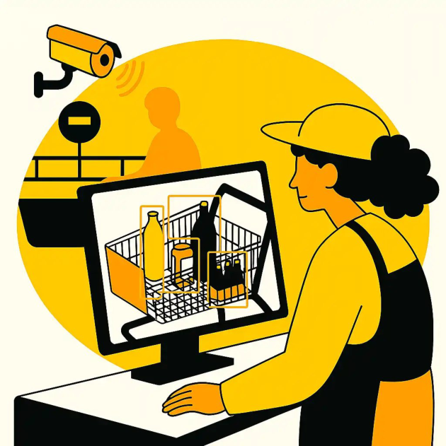

AI-Powered Retail Cart Detection Accuracy Improvement
How HumbleBeeAI improved retail cart and item detection from ~55% to ~75% mAP@50-95
Executive Summary
A European retail technology company building intelligent checkout and loss-prevention systems needed more reliable detection of shopping carts and their contents across varied retail settings. HumbleBeeAI conducted focused R&D on the client’s computer-vision detection system, reporting an improvement from ~55% to ~75% accuracy on mAP@50-95. The case study describes real-time performance on edge devices, but does not specify deployment scope or production status. [PDF p. 1] [PDF p. 1] [PDF p. 2]
Context and Challenge
The client serves retailers ranging from local stores to large supermarket chains, where checkout monitoring and loss prevention depend on detecting carts and diverse purchasable goods. Its existing model achieved only ~55% accuracy, with missed detections of non-empty carts creating potential revenue loss from untracked items. [PDF p. 2] [PDF p. 2]
The most difficult category was “item”: products vary widely in shape, material, size and color, from packaged goods to produce. Differences in retail environments and lighting also affected model consistency, while prior evaluation results varied with test-data composition and did not provide a stable view of reliability. [PDF p. 2]
Solution and Capabilities
HumbleBeeAI’s R&D focused on improving recognition of the challenging item class and making performance evaluation more dependable. The case study reports the following delivered research activities: [PDF p. 2]
Targeted detection model
A single-stage detection network was custom-trained to learn nuanced visual features for the item class across diverse retail scenarios. [PDF p. 2]
Expanded and diversified training data
The team expanded and diversified the training dataset with real-world retail footage and used scaling, random cropping, color and brightness variation, and geometric transformations to strengthen generalization. [PDF p. 2]
Confidence-interval evaluation and iterative refinement
Confidence interval-based evaluation was introduced to provide statistically grounded performance reporting under dataset noise and domain variability. The team also analyzed error distributions and confidence variance across object categories, then iteratively refined data-sampling strategies and model architectures. [PDF p. 2]

Results and Business Impact
The case study reports a substantial model-metric gain and improved evaluation reliability. It also describes stronger item recognition across varied retail conditions; the reported business effects are not quantified. [PDF p. 2] [PDF p. 1]
Detection accuracy increased from ~55% to ~75% mAP@50-95. [PDF p. 2]
Confidence interval-based evaluation produced statistically grounded reports and, according to the case study, reduced variance across datasets. [PDF p. 2]
The system reportedly demonstrated stable recognition across thousands of item types and varied lighting and shelf configurations. [PDF p. 2]
The source says the more accurate detection framework contributed to reduced shrinkage, more efficient checkout monitoring and improved loss-prevention outcomes, but provides no measured business-impact figures. [PDF p. 2]
Limitations and Next Steps
The supplied case study does not provide deployment details, a production rollout status, independent validation data, or quantified shrinkage, revenue or checkout-efficiency results. It describes real-time performance on edge devices, but does not identify the hardware, operating conditions or deployment coverage. No specific next steps are documented. [PDF p. 1] [PDF p. 1] [PDF p. 2]
The supplied source identifies an “Open original HumbleBeeAI page” link but does not include its URL, so a working original-page link cannot be provided here. [PDF p. 1]
Conclusion
This R&D engagement addressed the retail client’s hardest detection challenge with targeted model training, richer retail data and more rigorous evaluation. The case study reports that mAP@50-95 accuracy rose from ~55% to ~75%, providing a stronger technical basis for cart and item monitoring; business outcomes beyond the reported qualitative effects were not measured in the supplied material. [PDF p. 2] [PDF p. 2]